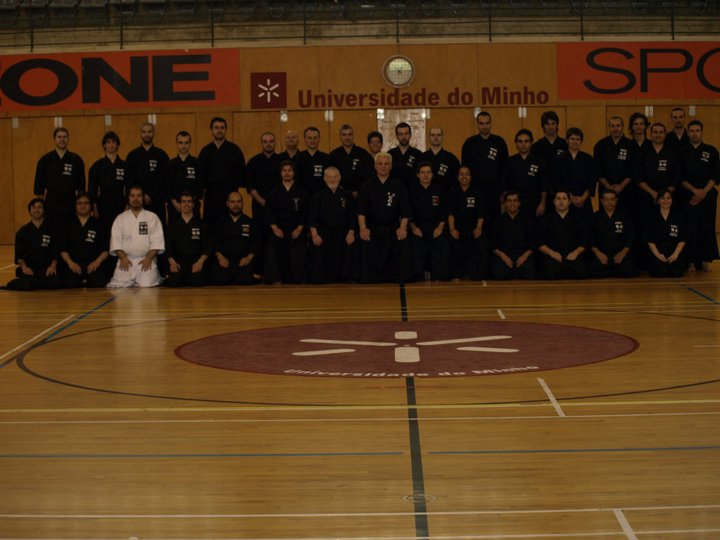
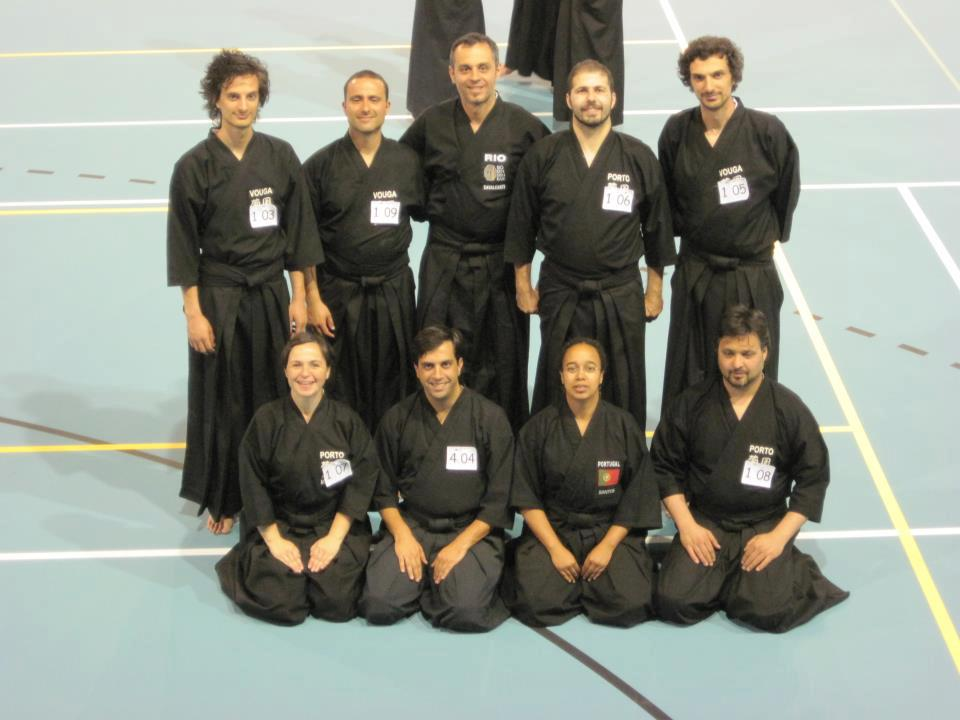
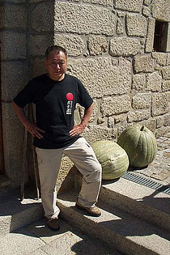
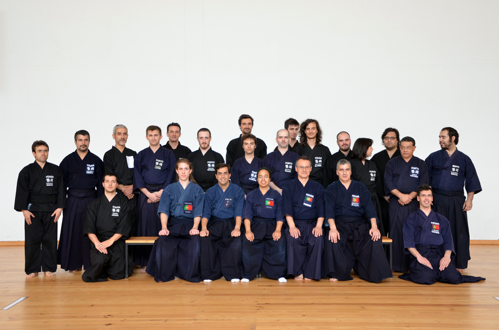
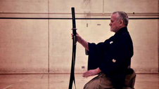
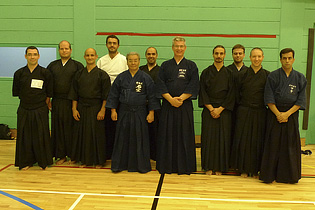

Noticias

2012.11.09
Lista candidata aos órgãos sociais
A lista candidata aos órgãos sociais do Zenshinkan é a seguinte:
- Assembleia Geral:
- Presidente: João Pires
- Secretários: Luis Rascão, João Pombo
- Presidente: Joaquim Mendes
- Secretário: Pedro Gomes
- Tesoureiro: Nuno Guedes
- Presidente: António Costa
- Vogais: Hugo Boleto, João Maia
- Apresentação de ponto de situação do clube
- Assuntos relativos à conta bancária (abertura de nova conta em nome do Zenshinkan, activação de home banking)
- Distribuição de tarefas para regularização da situação do Zenshinkan enquanto associação
- Eleição de nova direcção
- Manutenção das aulas de 3ª feira
- Outros
2012.10.24
II SEMINÁRIO NACIONAL DE IAIDO

Temos mais uma vez o prazer de anunciar que, nos próximos dias 17 e 18 de Novembro de 2012, se realizará, em Lisboa, o II Seminário Nacional de Iaido, dirigido pelos senseis Chris Mansfield (Iaido 7 Dan Renshi) e Len Bean (Iaido 7 Dan Renshi).
Desde 2007, temos contado com a presença e orientação do sensei Chris em vários seminários em Portugal, os quais têm contribuído para construir e desenvolver o Iaido português. É testemunho geral de todo o clube, que todos os estágios liderados pelo sensei Chris têm sido experiências únicas, muitíssimo interessantes e enriquecedoras.
O sensei Len Bean acompanhará o sensei Chris neste seminário, naquela que será a sua terceira visita a Portugal ao longo dos anos, e primeira visita a Lisboa, a qual faremos os possíveis para que seja o mais agradável possível.
Um seminário liderado por dois professores com graduação 7 Dan (máxima graduação alguma vez obtida por praticantes fora do Japão) é um privilégio raro em Portugal, pelo que este seminário será uma oportunidade a não perder.
O estágio encontra-se aberto a todos os praticantes, iniciados ou avançados. Para a inscrição é necessário preencher a ficha de inscrição e efectuar o pagamento, segundo a informação fornecida na ficha de inscrição.
Nela encontram-se também todas as informações necessárias sobre o preço, localização, horário e programa do seminário, bem como outras informações e conselhos úteis.
2012.10.10
Assembleia Geral - Zenshinkan
Realizar-se-á no dia 10/11/2012, em local e hora ainda a definir, a assembleia geral do Zenshinkan - Iaido Clube de Lisboa.
Para a mesma estão convocados todos os membros do Zenshinkan que possuam as quotas em dia.
Para preparação da assembleia solicita-se a apresentação de pontos a incluir na agenda da mesma bem como a apresentação de listas para votação da nova direcção.
Segue o calendário para apresentação da informação descrita acima:
Data limite para apresentação de pontos a incluir na agenda: 20/10/2012
Data limite para apresentação de listas para nova administração: 20/10/2012
No dia 27/10/2012 será publicada a agenda da assembleia bem como a constituição das listas candidatas à direcção do clube.
As listas apresentadas deverão ser constituídas pelos seguintes elementos:
- Assembleia Geral: 1 Presidente e 2 Secretários
- Direcção: 1 Presidente, 1 Secretário, 1 Tesoureiro
- Conselho Fiscal: 1 Presidente, 2 Vogais
- Apresentação de ponto de situação do clube;
- Assuntos relativos à conta bancária;
- Distribuição de tarefas para regularização da situação do Zenshinkan enquanto associação;
- Manutenção das aulas de 3ª feira;
- Outros;
- Eleição de nova direcção.
2012.08.26
Inicio da nova época 2012-2013
Verifique no site o local e horários do clube.
2012.08.06
PARABÉNS AO JOÃO MAIA E AOS NOVOS GRADUADOS DO PORTO E AVEIRO

Por ocasião do Seminário de Verão de Iaido e Jodo de 2012, que decorreu em Eindhoven, Holanda, desde o passado dia 31 de Julho até dia 4 de Agosto, é com grande orgulho e alegria que anunciamos que o nosso colega e senpai João Maia obteve a graduação de Yondan (4 Dan) em Iaido.
É mais um marco para a história do Iaido em Portugal, dado que o João se tornou assim no segundo português a conseguir obter esta graduação.
É mais uma prova do esforço, dedicação, e paixão por esta arte marcial que, não só ele, mas todo o clube tem manifestado ao longo de todos estes anos, e mais um incentivo à continuação do nosso trabalho e dedicação a estas artes marciais, para que no futuro possamos ter a satisfação de contar com muitos mais sucessos para cada um dos nossos membros.
Também por ocasião deste seminário, vários colegas e amigos nossos do Porto e Aveiro foram bem sucedidos nos seus exames de Shodan (1 Dan) em Iaido e em Jodo.
Em nome de todo o clube, muitos parabéns, e votos de muitos mais sucessos no futuro.
2012.06.13
SAIDA SENSEI OBTÉM 7º DAN EM IAIDO

É com grande alegria e orgulho que anunciamos que o Sensei Isao Saida, que durante tanto tempo esteve connosco, obteve recentemente a graduação de 7º Dan em Iaido.
O Sensei Saida acompanhou a evolução do Zenshinkan durante vários anos, aconselhando os nossos colegas e alunos, até retornar de vez para o Japão em 2008.
Em nome de todo o clube, muitos parabéns, e esperamos um dia ter o prazer de recebê-lo novamente em Portugal.
2012.05.22
RESULTADOS DO I CAMPEONATO NACIONAL DE JODO DE 2012

No passado dia 19 de Maio teve lugar o I Campeonato Nacional de Jodo de 2012. Foi novamente uma ótima experiência de convívio entre Lisboa, Aveiro, Porto e Braga, ainda as únicas regiões em Portugal onde o Jodo é praticado.
Os resultados do campeonato foram os seguintes:
CAMPEONATOS INDIVIDUAIS:
Categoria Mudan:
- Sérgio Andrade (CJIPorto)
- Manuel Marques (CJIPorto)
- João Mário Oliveira (CJIVouga) e Maria Alexandra Martins ( CJIPorto)
- Fighting Spirit: Manuel Marques (CJIPorto)
Categoria Shodan:
- Ricardo Coutinho (CJIMinho)
- Carlos Coutinho (CJIPorto)
- António Sousa (CJIPorto)
- Fighting Spirit: Carlos Coutinho ( CJIPorto)
Categoria Nidan:
- António Pinheiro (CJIVouga)
- João Pombo (Zenshinkan-ICL)
- António Beça (CJIPorto)
- Fighting Spirit: João Pombo (Zenshinkan-ICL)
CAMPEONATOS POR EQUIPAS:
- Porto 2
- Porto 3
- Porto 1 e Minho
- Fighting Spirit: António Sousa (Porto 2)
Os nossos parabéns à organização, e ao empenho e boa disposição de todos os participantes, árbitros e floor managers, que contribuíram para o sucesso deste campeonato.
2012.05.06
IIº CAMPEONATO NACIONAL DE JODO
Estão abertas as inscrições para a participação no Campeonato Nacional de Jodo, em Aveiro dia 19 de Maio 2012 entre as 11h00 e as 14h00 (abertura do Pavilhão: 10h30).
O local do torneio será no Ginásio do UINFOC, Edifício C.I.F.O.P. Centro Integrado de Formação de Professores, Avenida Padre Fernão de Oliveira, Campus Universitário de Santiago, Aveiro.
O Campeonato está aberto a todos os praticantes de Jodo, independentemente do seu nível, organizando-se as pools individuais por categorias de Mudan (sem grau dan) a 2º dan.
Este ano, a competição por equipas destina-se a praticantes com grau máximo de 1º dan, sendo que a soma de todos os graus dans de uma equipa não pode ser superior a 3 (mudan conta como shodan=1).
A inscrição deve ser efecuada pelo preenchimento e envio da ficha de inscrição , até ao dia 15 de Maio de 2012 para o endereço de e-mail: yuushinkan.eventos@gmail.com
Informações mais detalhadas na ficha de informação geral.
2012.04.13
ESTÁGIO DE IAIDO COM LEN BEAN SENSEI EM MATOSINHOS

Nos próximos dias 21 e 22 de Abril decorrerá, em Matosinhos, um seminário de Iaido dirigido pelo sensei Len Bean (Iaido 7 Dan Renshi, Jodo 5 Dan).
Teremos o prazer de receber o sensei Bean pela segunda vez em Portugal, sendo que recebemos a sua primeira visita há pouco mais de um ano, em Braga, em ocasião de um outro estágio de Iaido.
O estágio encontra-se acessível a sócios da Associação de Iaido de Portugal, mesmo que não tenham experiência em Iaido ou em qualquer arte marcial. Haverá também hipótese para praticantes iniciados de realizarem exames de 1 Kyu de Iaido e de Jodo, no final do seminário, para os quais haverá um pequeno custo adicional.
Para efectuar a inscrição, é necessário preencher a ficha de inscrição e entregá-la, por correio electrónico ou pessoalmente, ao remetente indicado.
Na ficha encontra-se toda a informação necessária relativamente ao programa e horário do estágio, localização, transportes e contactos úteis.
2012.02.09
I SEMINÁRIO NACIONAL DE JODO DE 2012

Decorrerá nos próximos dias 25 e 26 de Fevereiro, o I Seminário Nacional de Jodo deste ano. Contaremos mais uma vez com a presença do sensei Chris Mansfield (Jodo 7 Dan Renshi), e dos seus dois alunos, Aurélien Nacrour (Jodo 4 Dan) e Daniel Silk (Jodo 3 Dan).
Como todos os seminários liderados pelo sensei Chris desde há vários anos em Portugal, este será certamente mais uma experiência interessante e realizadora; o modo de ensino do Sensei reflecte o seu espírito dinâmico, interactivo e divertido, com o qual temos tido o privilégio de aprender ao longo dos anos.
Neste seminário, serão leccionados apenas conteúdos referentes ao currículo de Koryu (estilo Shindo Muso Ryu) de Jodo, tornando este seminário numa oportunidade a não perder.
Estão abertas as inscrições para o seminário. Para esse efeito é necessário preencher a Ficha de inscrição e entregá-la, por e-mail ou pessoalmente, ao remetente indicado.
Na ficha encontram-se todas as informações necessárias acerca do programa, horário e local do estágio, preços e meios de pagamento.